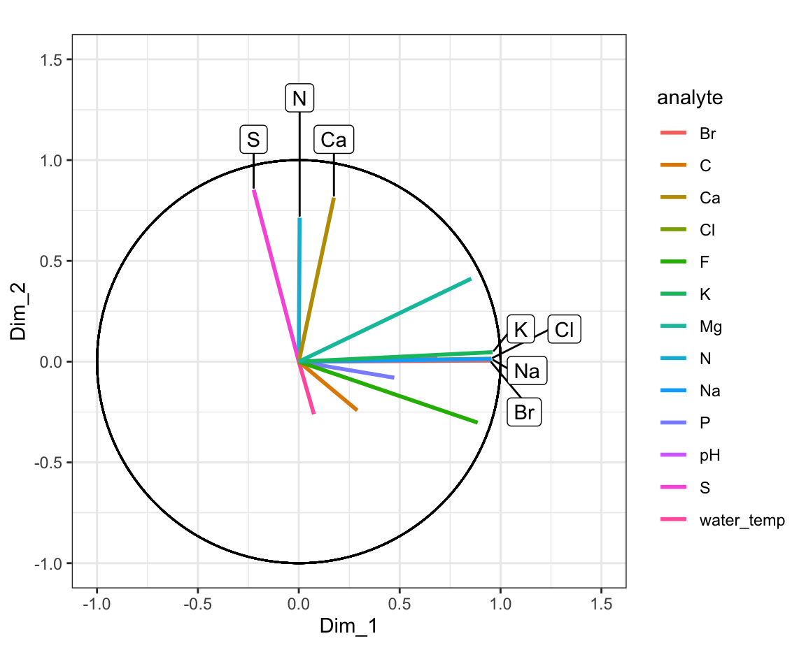
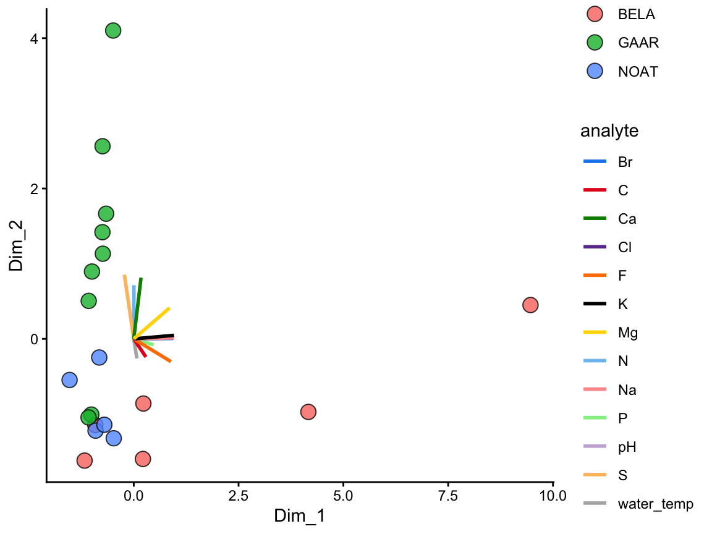
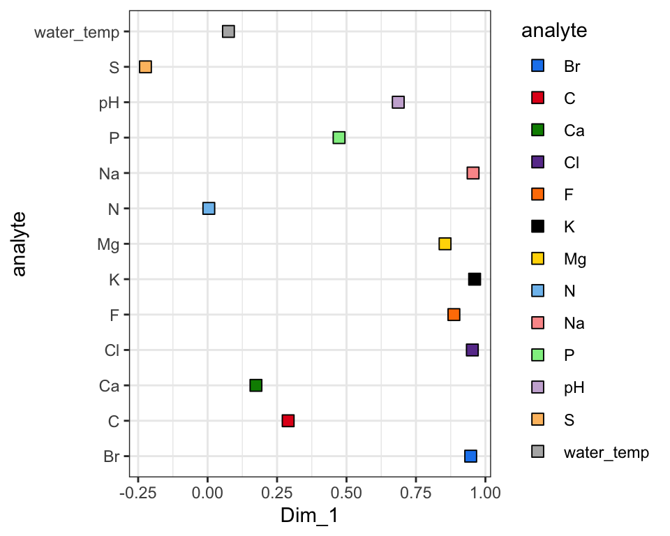
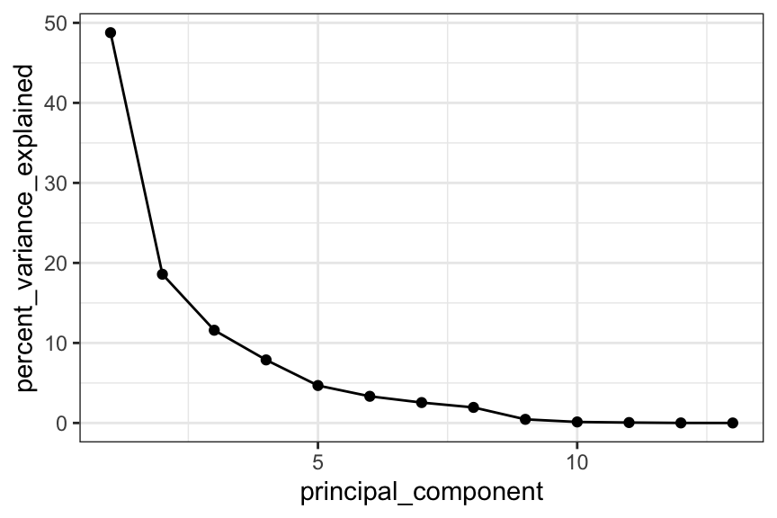
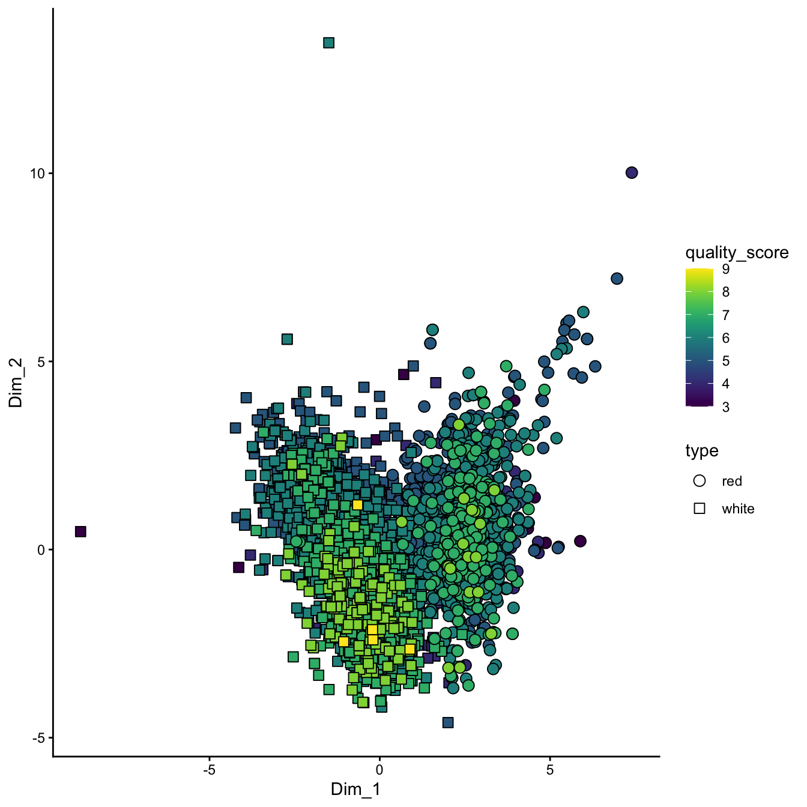
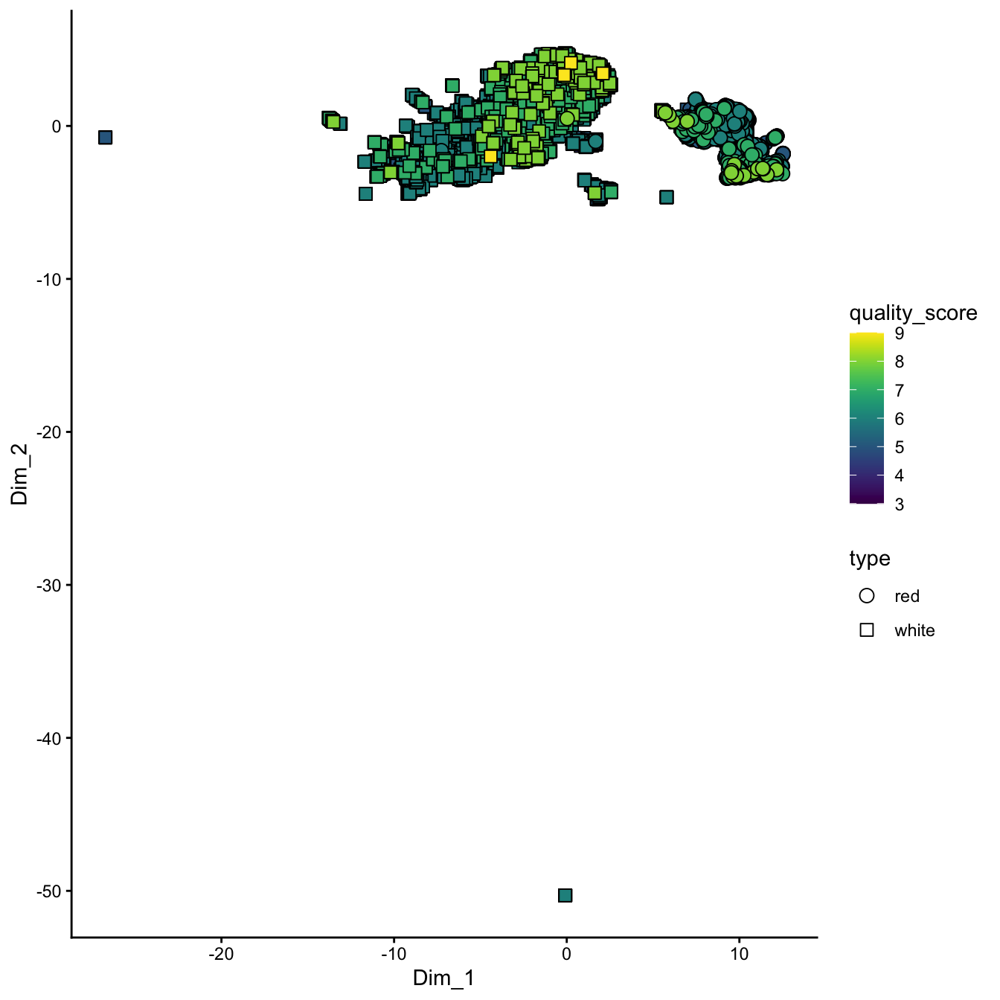

dimensional reduction

In the previous chapters, we explored data sets by plotting a few variables at a time and looking for trends by eye. That stops working once a data set has more variables than can sensibly be plotted: thirteen chemical measurements on every Alaskan lake, eleven on every bottle of wine, or the long list of numbers a language model uses to describe a single piece of text. Dimensionality reduction condenses those many variables into a few new axes, and plotting the first two places samples with similar profiles near each other. It answers questions such as “which samples resemble each other across all of the variables at once?” and, with principal components analysis (PCA), “which variables are driving the differences among the samples, and which are correlated?” PCA plots of this kind are a standard first look at any data set with many measurements per sample, and later in the book they return in the language model chapters, where PCA turns text and protein embeddings into a map. In this course, we will conduct dimensionality reduction using runMatrixAnalysis(), a function that is loaded into the R Session by the source() command.
Matrix analyses can be a bit tricky to set up. There are two things that we can do to help us with this: (i) we will use a template for runMatrixAnalysis() (see below) and (ii) it is critical that we think about our data in terms of samples and analytes. Let’s consider our Alaska lakes data set:
alaska_lake_data
## # A tibble: 220 × 7
## lake park water_temp pH element mg_per_L
## <chr> <chr> <dbl> <dbl> <chr> <dbl>
## 1 Devil_Mountain_L… BELA 6.46 7.69 C 3.4
## 2 Devil_Mountain_L… BELA 6.46 7.69 N 0.028
## 3 Devil_Mountain_L… BELA 6.46 7.69 P 0
## 4 Devil_Mountain_L… BELA 6.46 7.69 Cl 10.4
## 5 Devil_Mountain_L… BELA 6.46 7.69 S 0.62
## 6 Devil_Mountain_L… BELA 6.46 7.69 F 0.04
## 7 Devil_Mountain_L… BELA 6.46 7.69 Br 0.02
## 8 Devil_Mountain_L… BELA 6.46 7.69 Na 8.92
## 9 Devil_Mountain_L… BELA 6.46 7.69 K 1.2
## 10 Devil_Mountain_L… BELA 6.46 7.69 Ca 5.73
## # ℹ 210 more rows
## # ℹ 1 more variable: element_type <chr>We can see that this dataset consists of measurements of various analytes (i.e. several chemical elements, as well as water_temp, and pH), in different samples (i.e. lakes). We need to tell the runMatrixAnalysis() function how each column relates to this samples and analytes structure.
pca
“Which analytes are driving differences among my samples?” “Which analytes in my data set are correlated?”
theory
PCA looks at all the variance in a high dimensional data set and chooses new axes within that data set that align with the directions containing highest variance. These new axes are called principal components. Let’s look at an example:

Figure: Principal component rotation illustrated. The bold axes denote the new principal components that capture the largest variance directions, enabling us to describe complex data with fewer coordinates.
In the example above, the three dimensional space can be reduced to a two dimensional space with the principal components analysis. New axes (principal components) are selected (bold arrows on left) that become the x and y axes in the principal components space (right).
We can run and visualize principal components analyses using the runMatrixAnalysis() function as in the example below. As the output shows, the command provides the sample_IDs, sample information, then the coordinates for each sample in the 2D projection (the “PCA plot”) and the raw data, in case further processing is needed.
alaska_lake_data_wide <- pivot_wider(alaska_lake_data[,1:6], names_from = "element", values_from = "mg_per_L")
alaska_lake_data_wide
## # A tibble: 20 × 15
## lake park water_temp pH C N P Cl
## <chr> <chr> <dbl> <dbl> <dbl> <dbl> <dbl> <dbl>
## 1 Devil_Mo… BELA 6.46 7.69 3.4 0.028 0 10.4
## 2 Imuruk_L… BELA 17.4 6.44 4.7 0.013 0 1.18
## 3 Kuzitrin… BELA 8.06 7.45 2 0 0 0.67
## 4 Lava_Lake BELA 20.2 7.42 8.3 0.017 0.001 2.53
## 5 North_Ki… BELA 11.3 8.04 4.3 0.037 0.001 337.
## 6 White_Fi… BELA 12.0 7.82 12.3 0.034 0.006 105.
## 7 Iniakuk_… GAAR 9.1 7.01 3.3 0.141 0 0.22
## 8 Kurupa_L… GAAR 9.3 7.03 2.1 0.043 0 0.13
## 9 Lake_Mat… GAAR 10.2 6.95 5.1 0 0 1.25
## 10 Lake_Sel… GAAR 15.1 7.15 4.2 0.107 0 0.11
## 11 Nutavukt… GAAR 17.6 6.88 4.5 0 0.001 0.18
## 12 Summit_L… GAAR 11.9 6.45 2.4 0 0.001 0.08
## 13 Takahula… GAAR 9.9 6.88 2.7 0.014 0 0.23
## 14 Walker_L… GAAR 15.3 7.22 1.3 0.19 0.001 0.19
## 15 Wild_Lake GAAR 5.5 6.98 6.5 0.13 0.001 0.31
## 16 Desperat… NOAT 2.95 6.34 2.1 0.005 0 0.2
## 17 Feniak_L… NOAT 4.51 7.24 1.8 0 0 0.21
## 18 Lake_Kan… NOAT 5.36 6.56 8.5 0.005 0 0.55
## 19 Lake_Nar… NOAT 18.3 7.31 5.8 0 0 0.76
## 20 Okoklik_… NOAT 6.46 6.87 7.8 0 0 0.76
## # ℹ 7 more variables: S <dbl>, F <dbl>, Br <dbl>, Na <dbl>,
## # K <dbl>, Ca <dbl>, Mg <dbl>
AK_lakes_pca <- runMatrixAnalysis(
data = alaska_lake_data_wide,
analysis = "pca",
columns_w_values_for_single_analyte = colnames(alaska_lake_data_wide)[3:15],
columns_w_sample_ID_info = c("lake", "park")
)
head(AK_lakes_pca)
## # A tibble: 6 × 18
## sample_unique_ID lake park Dim_1 Dim_2 water_temp
## <chr> <chr> <chr> <dbl> <dbl> <dbl>
## 1 Devil_Mountain_Lake_… Devi… BELA 0.229 -0.861 6.46
## 2 Imuruk_Lake_BELA Imur… BELA -1.17 -1.62 17.4
## 3 Kuzitrin_Lake_BELA Kuzi… BELA -0.918 -1.15 8.06
## 4 Lava_Lake_BELA Lava… BELA 0.219 -1.60 20.2
## 5 North_Killeak_Lake_B… Nort… BELA 9.46 0.450 11.3
## 6 White_Fish_Lake_BELA Whit… BELA 4.17 -0.972 12.0
## # ℹ 12 more variables: pH <dbl>, C <dbl>, N <dbl>, P <dbl>,
## # Cl <dbl>, S <dbl>, F <dbl>, Br <dbl>, Na <dbl>,
## # K <dbl>, Ca <dbl>, Mg <dbl>Note that runMatrixAnalysis() scales every analyte before running the PCA (the reasons are covered in the distances and scaling chapter). Scaling matters here too: without it, the first principal component of the Alaska data explains 95% of the variance and is almost entirely chloride, simply because chloride is measured in the largest numbers.
Let’s plot the 2D projection of the Alaska lakes data:
ggplot(data = AK_lakes_pca, aes(x = Dim_1, y = Dim_2)) +
geom_point(aes(fill = park), shape = 21, size = 4, alpha = 0.8) +
geom_label_repel(aes(label = lake), alpha = 0.5) +
theme_classic()
Figure: Alaskan lakes separated by their water chemistry. A scatter plot of principal component analysis (PCA) scores, with the first principal component (Dim_1) on the x-axis and the second (Dim_2) on the y-axis. Each point is one lake, fill color shows the national park the lake is in, and labels give the lake names. Lakes that sit close together have similar chemistry across all thirteen measured variables. Data are from the alaska_lake_data dataset used in UMD CHEM5725.
Great! In this plot we can see that White Fish Lake and North Killeak Lake, both in BELA park, are quite different from the other parks (they are separated from the others along dimension 1, i.e. the first principal component). At the same time, Wild Lake, Iniakuk Lake, Walker Lake, and several other lakes in GAAR park are different from all the others (they are separated from the others along dimension 2, i.e. the second principal component).
Important question: what makes the lakes listed above different from the others? Clearly some aspect of their chemistry, since that’s the data that this analysis is built upon, but how do we determine which analyte(s) are driving the differences among the lakes that we see in the PCA plot?
ordination plots
Let’s look at how to access the information about which analytes are major contributors to each principal component. This is important because it reveals which analytes are associated with particular dimensions, and by extension, which analytes are associated with (and are markers for) particular groups in the PCA plot. This can be determined using an ordination plot. Let’s look at an example. We can obtain the ordination plot information using runMatrixAnalysis() with analysis = "pca_ord":
AK_lakes_pca_ord <- runMatrixAnalysis(
data = alaska_lake_data_wide,
analysis = c("pca_ord"),
columns_w_values_for_single_analyte = colnames(alaska_lake_data_wide)[3:15],
columns_w_sample_ID_info = c("lake", "park")
)
head(AK_lakes_pca_ord)
## # A tibble: 6 × 3
## analyte Dim_1 Dim_2
## <chr> <dbl> <dbl>
## 1 water_temp 0.0750 -0.261
## 2 pH 0.686 0.0185
## 3 C 0.290 -0.242
## 4 N 0.00435 0.714
## 5 P 0.473 -0.0796
## 6 Cl 0.953 0.0148We can now visualize the ordination plot using our standard ggplot plotting techniques. Note the use of geom_label_repel() and filter() to label certain segments in the ordination plot. Using geom_label_repel() is not required; the built-in geom_label() works too, but geom_label_repel() can make labeling the segments easier.
ggplot(AK_lakes_pca_ord) +
geom_segment(aes(x = 0, y = 0, xend = Dim_1, yend = Dim_2, color = analyte), size = 1) +
geom_circle(aes(x0 = 0, y0 = 0, r = 1)) +
geom_label_repel(
data = filter(AK_lakes_pca_ord, Dim_1 > 0.9, Dim_2 < 0.1, Dim_2 > -0.1),
aes(x = Dim_1, y = Dim_2, label = analyte), xlim = c(1,1.5)
) +
geom_label_repel(
data = filter(AK_lakes_pca_ord, Dim_2 > 0.5),
aes(x = Dim_1, y = Dim_2, label = analyte), direction = "y", ylim = c(1,1.5)
) +
coord_fixed(xlim = c(-1,1.5), ylim = c(-1,1.5)) +
labs(x = "Dim_1", y = "Dim_2") +
theme_bw()
Figure: Which analytes drive each principal component of the Alaskan lake chemistry. An ordination (loadings) plot, with each analyte drawn as a segment from the origin to its loading on the first principal component (Dim_1, x-axis) and the second (Dim_2, y-axis). Segment color identifies the analyte, the black circle has a radius of one, and labels mark the analytes that load most strongly on each component. Data are from the alaska_lake_data dataset used in UMD CHEM5725.
Great! Here is how to read the ordination plot:
When considering one analyte’s vector: the vector’s projected value on an axis shows how much its variance is aligned with that principal component.
When considering two analyte vectors: the angle between two vectors indicates how correlated those two variables are. If they point in the same direction, they are highly correlated. If they meet each other at 90 degrees, they are not very correlated. If they meet at ~180 degrees, they are negatively correlated. For example, if one analyte sits at 0.9 on dimension 2 and another at -0.9 on dimension 2, and both sit near 0 on dimension 1, those two analytes are strongly negatively correlated. This reading is most reliable for vectors that reach close to the circle; a short vector is poorly described by these two dimensions.
With the ordination plot above, we can now see that the abundances of K, Cl, Br, and Na are the major contributors of variance to the first principal component (or the first dimension). The abundances of these elements are what make White Fish Lake and North Killeak Lake different from the other lakes. We can also see that the abundances of N, S, and Ca are the major contributors to variance in the second dimension, which means that these elements are what set Wild Lake, Iniakuk Lake, Walker Lake, and several other lakes in GAAR park apart from the rest of the lakes in the data set.
Reading the plot by eye works well for a handful of analytes, but the ordination data can also be sorted directly. One detail matters when doing so: a loading of -0.95 is just as strong as a loading of 0.95. It simply points the other way. So to rank analytes by how much they contribute to a component, sort by the absolute value of the loading with abs():
AK_lakes_pca_ord %>%
arrange(desc(abs(Dim_1)))
## # A tibble: 13 × 3
## analyte Dim_1 Dim_2
## <chr> <dbl> <dbl>
## 1 K 0.961 0.0469
## 2 Na 0.956 0.0133
## 3 Cl 0.953 0.0148
## 4 Br 0.947 0.00545
## 5 F 0.887 -0.303
## 6 Mg 0.855 0.412
## 7 pH 0.686 0.0185
## 8 P 0.473 -0.0796
## 9 C 0.290 -0.242
## 10 S -0.224 0.853
## 11 Ca 0.174 0.814
## 12 water_temp 0.0750 -0.261
## 13 N 0.00435 0.714The analytes at the top of this list are the main drivers of the first principal component. Sorting by abs(Dim_2) instead gives the drivers of the second.
It is slightly easier to see how the two plots relate if we look at an overlay of them, which is often called a “biplot”:
ggplot() +
geom_point(
data = AK_lakes_pca,
aes(x = Dim_1, y = Dim_2, fill = park), shape = 21, size = 4, alpha = 0.8
) +
geom_segment(
data = AK_lakes_pca_ord,
aes(x = 0, y = 0, xend = Dim_1, yend = Dim_2, color = analyte),
size = 1
) +
scale_color_manual(values = discrete_palette) +
theme_classic()
Figure: Alaskan lake scores and analyte loadings on shared axes. A PCA biplot, with the first principal component (Dim_1) on the x-axis and the second (Dim_2) on the y-axis. Each point is one lake, filled by the national park it is in, and each colored segment is one analyte, drawn from the origin to its loading on the two components. Data are from the alaska_lake_data dataset used in UMD CHEM5725.
Note that ordination data need not be plotted as a circular layout of segments. Sometimes it is much easier to plot (and interpret!) alternatives:
AK_lakes_pca_ord %>%
ggplot(aes(x = Dim_1, y = analyte)) +
geom_point(aes(fill = analyte), shape = 22, size = 3) +
scale_fill_manual(values = discrete_palette) +
theme_bw()
Figure: Loadings of each analyte on the first principal component of the Alaskan lake chemistry. A dot plot, with the loading on the first principal component (Dim_1) on the x-axis and the analyte on the y-axis. Each square is one analyte, filled by analyte. Analytes far from zero in either direction contribute most to the first component. Data are from the alaska_lake_data dataset used in UMD CHEM5725.
principal components
We also can access information about how much of the variance in the data set is explained by each principal component, and we can plot that using ggplot:
AK_lakes_pca_dim <- runMatrixAnalysis(
data = alaska_lake_data_wide,
analysis = c("pca_dim"),
columns_w_values_for_single_analyte = colnames(alaska_lake_data_wide)[3:15],
columns_w_sample_ID_info = c("lake", "park")
)
head(AK_lakes_pca_dim)
## # A tibble: 6 × 2
## principal_component percent_variance_explained
## <dbl> <dbl>
## 1 1 48.8
## 2 2 18.6
## 3 3 11.6
## 4 4 7.88
## 5 5 4.68
## 6 6 3.33
ggplot(
data = AK_lakes_pca_dim,
aes(x = principal_component, y = percent_variance_explained)
) +
geom_line() +
geom_point() +
theme_bw()
Figure: How much of the variance in the Alaskan lake chemistry each principal component explains. A line plot (often called a scree plot), with the principal component number on the x-axis and the percentage of the total variance that component explains on the y-axis. Each point is one principal component. Data are from the alaska_lake_data dataset used in UMD CHEM5725.
Cool! We can see that the first principal component retains nearly 50% of the variance in the original dataset, while the second dimension contains only about 20%. We can derive an important notion about PCA visualization from this: the scales on the two axes need to be the same for distances between points in the x and y directions to be comparable. This can be accomplished by adding coord_fixed() to a ggplot.
To pull out the value for a single component, filter the table to that component:
filter(AK_lakes_pca_dim, principal_component == 1)
## # A tibble: 1 × 2
## principal_component percent_variance_explained
## <dbl> <dbl>
## 1 1 48.8pcaVisualizer
Static plots are great for reporting, but exploring PCA interactively can make it easier to understand the relationships between samples and analytes. Our source() command provides an interactive app helper called pcaVisualizer() that wraps runMatrixAnalysis() and assembles a dashboard with coordinated plots.

Figure: Screenshot of the pcaVisualizer() dashboard showing the linked scores plot, loadings plot, and heatmap panels used to explore PCA interactively.
The function takes three key arguments:
-
data: a data frame that contains both the sample identifiers and the numeric analyte columns. -
columns_w_sample_ID_info: the column names that identify each sample (for examplec("lake", "park")). -
columns_w_values_for_single_analyte: the numeric columns that should be analyzed (for examplecolnames(alaska_lake_data_wide)[3:15]).
To launch the app for the Alaska lakes example:
pcaVisualizer(
data = alaska_lake_data_wide,
columns_w_sample_ID_info = c("lake", "park"),
columns_w_values_for_single_analyte = colnames(alaska_lake_data_wide)[3:15]
)This opens a browser window (or RStudio viewer) with three linked panels. Because it is an interactive app, pcaVisualizer() needs R running on a computer and does not run in the browser cells on this page:
-
PCA Plot – the familiar scores plot. Use the sidebar dropdowns to map any sample ID column to color or shape; the app reuses the
discrete_palettedefined earlier so colors stay consistent with the rest of this chapter. - Ordination Plot – the loadings plot. Adjust the Filter ordination plot slider to hide vectors whose combined PC1/PC2 loading magnitude falls below a chosen threshold, making it easier to focus on the analytes that matter.
- Analyte Abundance Heatmap – a scaled (z-scored) heatmap for the analytes that pass the loading filter. Rows can be ordered by Dim_1 or Dim_2 so the heatmap aligns with whichever direction of separation matters in the scores plot.
Because pcaVisualizer() calls runMatrixAnalysis() under the hood, any transformations performed on the data before launching the app (scaling, filtering, subsetting) carry through automatically. Use it as a quick sanity check while refining preprocessing steps, and once the preprocessing is settled, reproduce the final view with scripted ggplot code for publication-quality figures.
umap and tsne
“How do non-linear dimensionality reduction techniques reveal hidden structure in my data?” “Can I identify clusters or subtle gradients in my dataset that might be missed by PCA?”
UMAP (Uniform Manifold Approximation and Projection) is a non-linear dimensionality reduction technique that, unlike PCA, can capture both local and global data structure. It is especially useful when the data might have clusters or manifold structures that aren’t well-represented by linear combinations of features. Think of UMAP as a technique that “unwinds” a dataset, rather than projecting it onto a plane. Compared with PCA, UMAP often reveals tighter clusters and curved trajectories because it optimizes neighborhood relationships rather than a straight-line variance objective. That flexibility is powerful, but it comes with trade-offs: UMAP axes have no direct numerical interpretation, results depend on hyperparameters such as n_neighbors and min_dist, and the algorithm is stochastic, so repeated runs can vary slightly. PCA, in contrast, is deterministic and easier to interpret because each principal component is a weighted combination of the original variables, but it may miss nonlinear structure that UMAP highlights.
We will work here with the wine_quality dataset. Our wine quality dataset doesn’t come with unique sample identifiers, which are essential for any matrix analysis. We can create these identifiers by adding a new column called ID to our data frame. The code below demonstrates how to do this:
In this command, the dollar sign ($) is used to access (or create) the ID column within the wine_quality data frame. The seq() function generates a sequence of numbers starting at 1 and ending at the number of rows in the dataset (given by dim(wine_quality)[1]), with an increment of 1. This way, every sample is uniquely identified.
Before starting with non-linear techniques, it can be helpful to see how a linear method like PCA clusters our samples. We run the analysis using runMatrixAnalysis(), specifying the relevant columns that contain our continuous variables (columns 4 to 14), and passing our sample identifier along with additional information such as wine type, quality_score, and quality_category.
wq <- runMatrixAnalysis(
data = wine_quality,
analysis = "pca",
columns_w_values_for_single_analyte = colnames(wine_quality)[4:14],
columns_w_sample_ID_info = c("ID", "type", "quality_score", "quality_category")
)
wq %>%
arrange(quality_score) %>%
ggplot(aes(x = Dim_1, y = Dim_2)) +
geom_point(size = 3, aes(shape = type, fill = quality_score)) +
scale_shape_manual(values = c(21, 22)) +
scale_fill_viridis() +
theme_classic()
Figure: Red and white wines separated by their chemistry, using a linear method. A scatter plot of PCA scores, with the first principal component (Dim_1) on the x-axis and the second (Dim_2) on the y-axis. Each point is one wine, point shape shows whether it is red or white, and fill color shows its sensory quality score. Data are from the wine_quality dataset used in UMD CHEM5725.
In this PCA plot, each point represents a wine sample, with its position determined by the first two principal components. We’re using quality_score to fill the points with color, and different shapes to distinguish the wine type. This serves as a baseline for comparing how non-linear methods handle our data.
We can perform UMAP on the wine quality dataset just as easily as PCA. The code below shows how to run UMAP using runMatrixAnalysis():
runMatrixAnalysis(
data = wine_quality,
analysis = "umap",
columns_w_values_for_single_analyte = colnames(wine_quality)[4:14],
columns_w_sample_ID_info = c("ID", "type", "quality_score", "quality_category")
) %>%
arrange(quality_score) %>%
ggplot(aes(x = Dim_1, y = Dim_2)) +
geom_point(size = 3, aes(shape = type, fill = quality_score)) +
scale_shape_manual(values = c(21, 22)) +
scale_fill_viridis() +
theme_classic()
Figure: Red and white wines separated by their chemistry, using a non-linear method. A scatter plot of a UMAP (uniform manifold approximation and projection) embedding, with the first UMAP dimension (Dim_1) on the x-axis and the second (Dim_2) on the y-axis; the axes have no units and no direct chemical meaning. Each point is one wine, point shape shows whether it is red or white, and fill color shows its sensory quality score. Data are from the wine_quality dataset used in UMD CHEM5725.
In the UMAP plot, each point’s coordinates (Dim_1 and Dim_2) are derived from UMAP’s algorithm, which strives to preserve the overall topology of the data. As a result, UMAP might reveal clusters or continuous gradients related to wine quality and type that aren’t as apparent with PCA.
t‑SNE (t‑Distributed Stochastic Neighbor Embedding) is another popular non-linear dimensionality reduction technique. It excels at revealing clusters but can sometimes distort the global structure in favor of preserving local relationships. Although we’re not showing a full t‑SNE example here, t‑SNE can be run using the runMatrixAnalysis() function by specifying analysis = “tsne” (see below). Note that tsne fails with samples that have duplicate analyte values, so we have to filter out any duplicates.
wine_quality_deduplicated <- wine_quality[!duplicated(wine_quality[4:14]),]
tsne_results <- runMatrixAnalysis(
data = wine_quality_deduplicated,
analysis = "tsne",
columns_w_values_for_single_analyte = colnames(wine_quality)[4:14],
columns_w_sample_ID_info = c("ID", "type", "quality_score", "quality_category")
)From there, the t‑SNE dimensions can be plotted in a similar fashion to the PCA and UMAP examples.
Both UMAP and t‑SNE provide powerful alternatives to PCA when the data’s structure is non-linear. They can help uncover hidden patterns and clusters by focusing on preserving local relationships (UMAP while maintaining a sense of global structure, and t‑SNE by emphasizing the neighborhood structure of the data).
chapter summary
Dimensionality reduction places samples with many measurements on a two-dimensional plot, where nearby samples have similar profiles. PCA is the one to use when the axes need explaining: each principal component is a combination of the analytes, the ordination shows which analytes drive each one (ranked by the size of the loading, ignoring its sign), and the scree plot shows how much of the variance each holds. PCA scales every analyte first, and the scores plot needs coord_fixed() so that distances in the two directions can be compared. UMAP and t-SNE are non-linear and can reveal clusters or curved gradients that PCA misses, but their axes have no chemical meaning and each run can come out a little differently, so read only which samples sit near each other. The flowchart and the table below summarize the choices.
Download this summary as a one-page PDF.

Figure: Choosing a dimensionality reduction. A decision flowchart that starts from a data set with too many variables to plot directly and ends at a value for the analysis argument of runMatrixAnalysis. Yellow boxes are questions about the data or the goal and green boxes are recommended analyses.
analysis or function |
What it returns or does | What to set or watch |
|---|---|---|
"pca" |
scores: one row per sample, with Dim_1, Dim_2
|
columns_w_values_for_single_analyte, columns_w_sample_ID_info, then coord_fixed() on the plot |
"pca_ord" |
loadings: one row per analyte | rank with arrange(desc(abs(Dim_1))), draw with geom_segment() and geom_circle()
|
"pca_dim" |
percent_variance_explained for each principal_component
|
scree plot, or filter(principal_component == 1) for one value |
| biplot | scores and loadings on shared axes |
geom_point() from "pca" plus geom_segment() from "pca_ord"
|
pcaVisualizer() |
linked scores, ordination and heat map panels |
data plus the two column arguments, desktop R only |
"umap" |
non-linear embedding | axes have no meaning, runs vary, does not run in browser cells |
"tsne" |
non-linear embedding that favors local clusters | remove samples with duplicate analyte values first, runs vary |
exercises


further reading
StatQuest: Principal Component Analysis (PCA), Step-by-Step. A visually intuitive YouTube explanation of PCA that breaks down the algorithm step by step using clear graphics, part of a curated playlist on statistical analysis.
Understanding UMAP. A Pair Code blog post covering both the intuition and practical applications of UMAP, bridging the gap between the algorithm’s theoretical foundations and real-world use cases.
UMAP: Mathematical Details. A YouTube video that walks through the mathematical underpinnings of UMAP in an accessible way, for viewers who want to understand how the algorithm works behind the scenes.